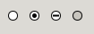

Function gtk4::render_option
source · [−]pub fn render_option(
context: &impl IsA<StyleContext>,
cr: &Context,
x: f64,
y: f64,
width: f64,
height: f64
)Expand description
Renders an option mark (as in a radio button), the StateFlags::CHECKED
state will determine whether the option is on or off, and
StateFlags::INCONSISTENT whether it should be marked as undefined.
Typical option mark rendering:

context
cr
x
X origin of the rectangle
y
Y origin of the rectangle
width
rectangle width
height
rectangle height